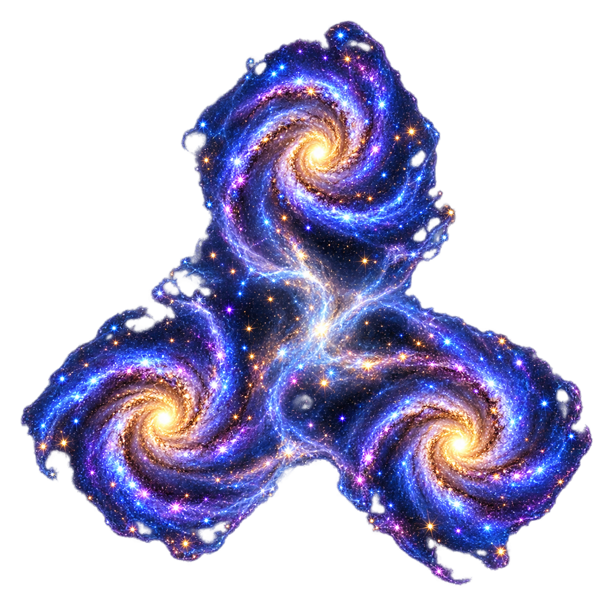
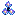

A · Triad Cluster
recommended · most literal
palette
blue/violet + gold/white

형태: 금빛 핵 3개 + 삼각형 청보라 mini spiral + 옅은 bridge. 세 은하와 가스 자체가 3엽 실루엣을 형성.
장점: “여러 은하가 묶인 은하단”을 가장 즉시 설명하고 Galaxy 8px보다 한 단계 큰 개체감을 줌.
단점: 개체 수는 B/C보다 적어 우주적 규모감은 가장 절제됨.
16px: PASS · 분리 핵/mini spiral 3 · 96px · 7 colors · 1 comp (4/8) · edge α0